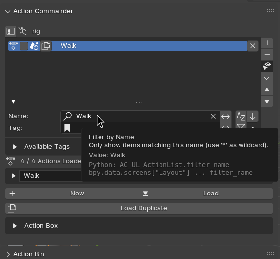
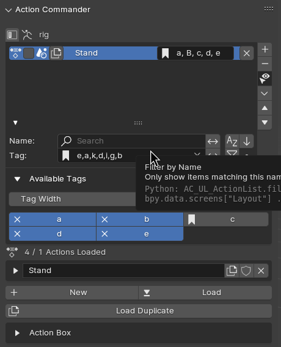
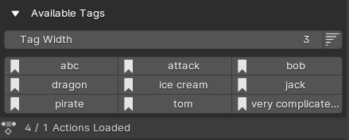
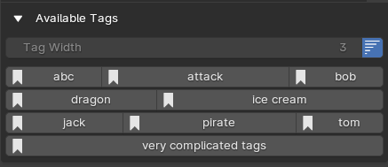

Filter and Tag System¶
Filtering System¶
In the Action List Panel, you can filter the action by name and tags using the Filter and Tag System. This is extremely useful when you are working on many actions in the same file.
Options¶
Filter By Name¶
Filter The Actions By Name
Invert Name Filter¶
Inverse the Name Filter
Sort by Name¶
Sort the Filter Result by Name Alphabetically
Reverese¶
Reverse the Sorting of the Filter order
Invert Tag Filter¶
Inverse the Tag Filter
Use Tag Exclusive¶
If Enable, Only match Action if the actions have all tags in the tag filter
Tagging System¶
You can Assign Tags to the Action, separated by comma.
This is useful for categorizing your action without giving really long names to the action
Options¶
Tag Width¶
This determine how wide the Tags listed is going to be in a row, the bigger the number, the less item will be in a row
Tag Variable Width¶
If tag variable width is enabled, it will disable tag width, and set the tag’s button width based on the character amount of the tags
